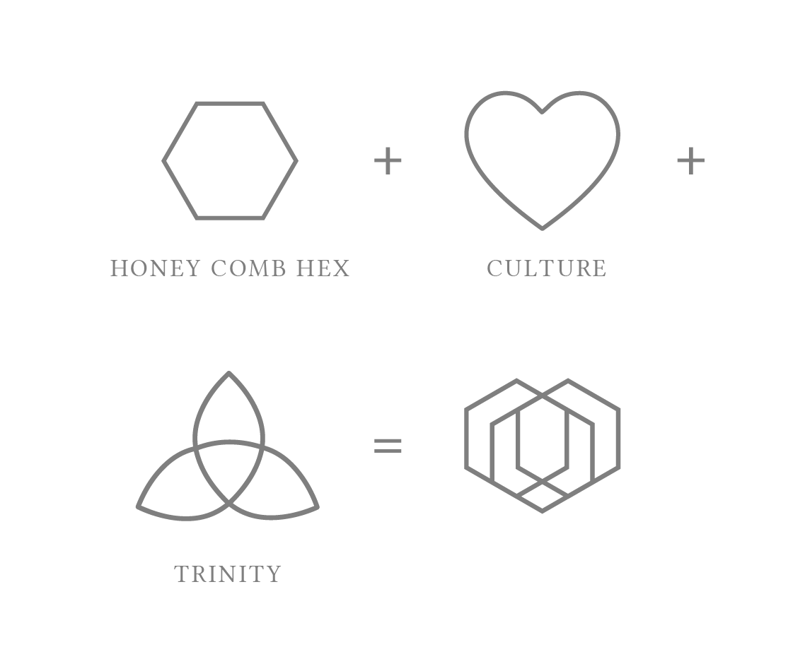
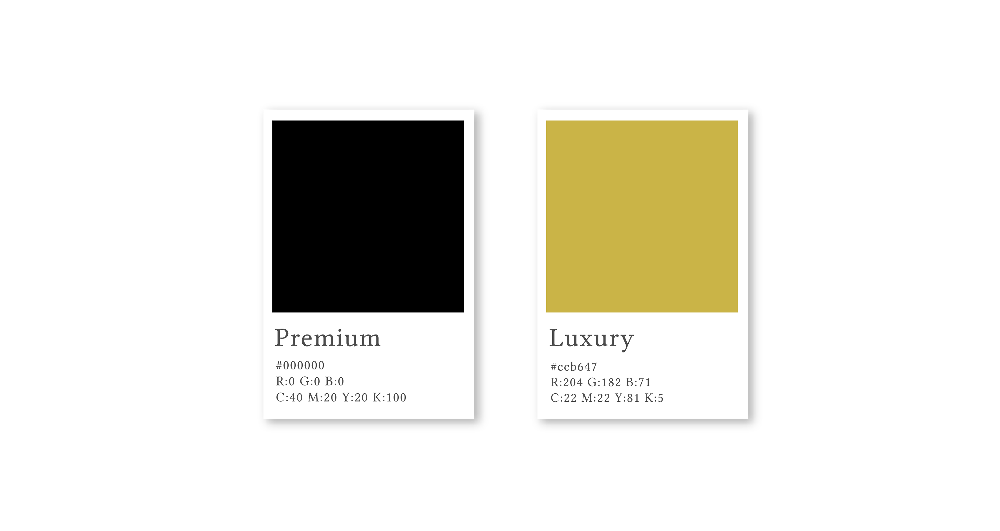
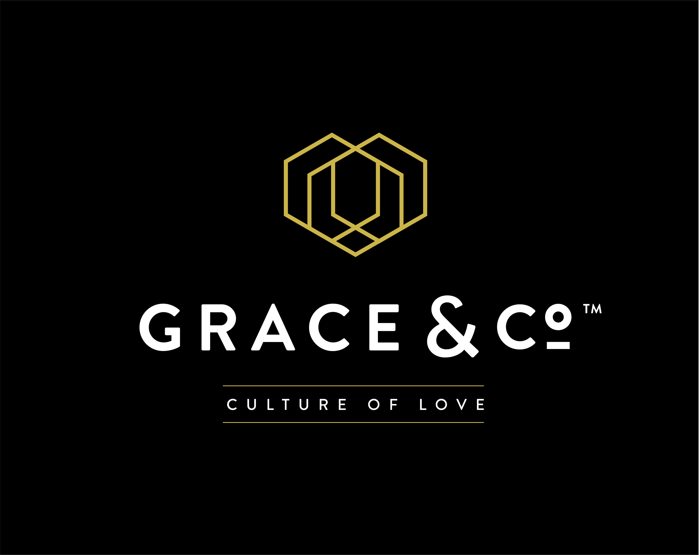
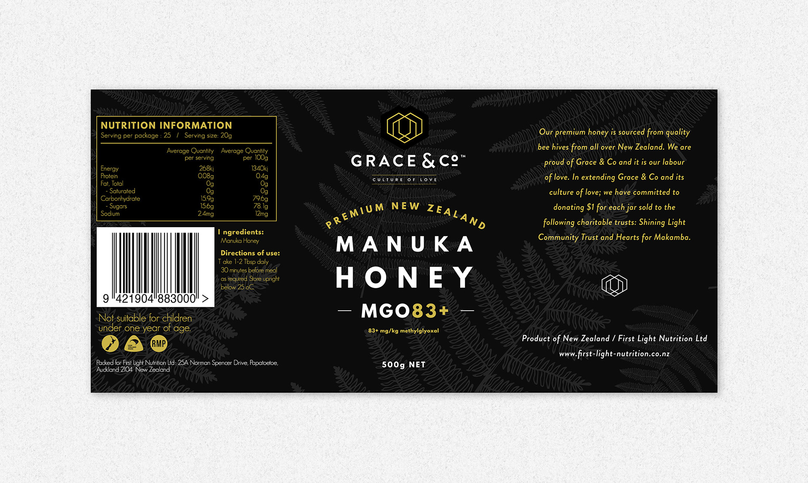
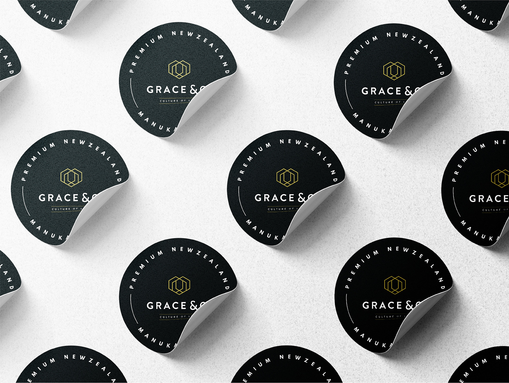
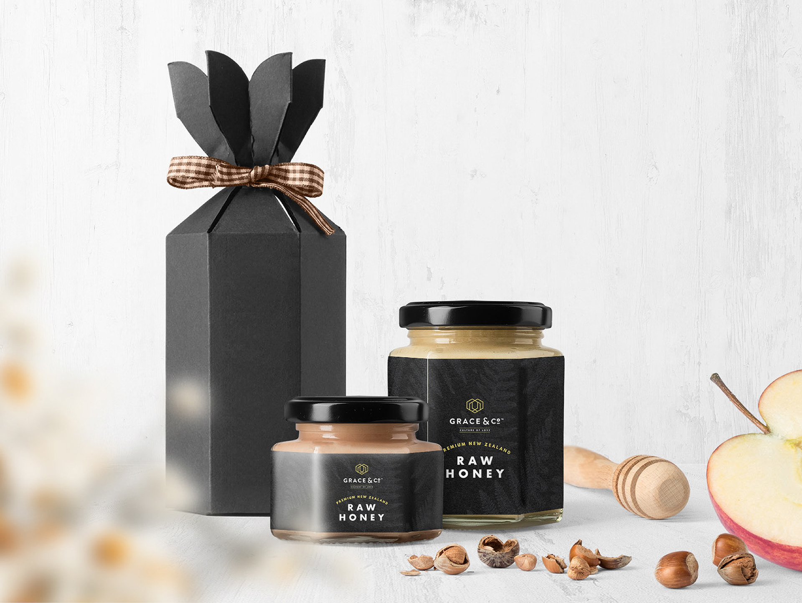
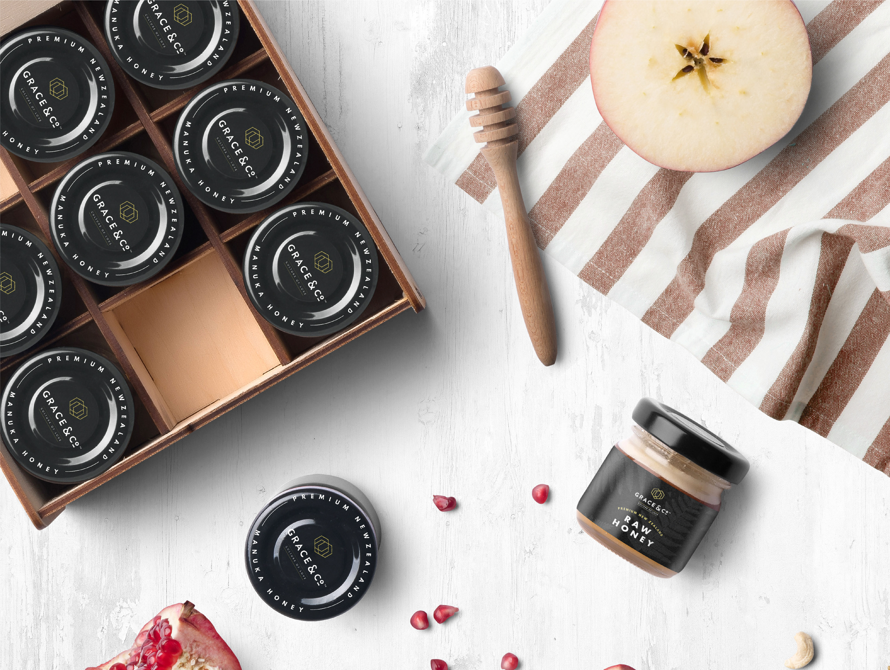

Brand identity project
Grace & Co Branding
Summary
Grace & Co is a premium honey brand identity project built to feel refined, distinctive, and meaningful while supporting future retail growth.
The branding combined a luxury black-and-gold palette with a symbolic logo system designed to communicate both quality and purpose.
Grace & Co is a brand under the company ‘First Light’, started by Fiona and Richard. They import UMF 5+ Manuka honey sourced from all over New Zealand and were hoping to expand beyond word of mouth into social media marketing channels in the future.
A proportion of the profits was to be used to support missionary work, so our aim was to create a brand identity with upmarket qualities and a deeper sense of purpose. We chose a premium black and luxurious gold colour palette and developed a clean logo with three honeycomb hexagons interlocked together to form a heart while also representing the Trinity.
With plans to place the honey in grocery stores, the labels needed to stand out on shelf, while the overall identity also needed to remind customers that part of the profits would support a greater cause, reflected in the tagline “Culture of Love”.







For over a decade, I’ve been turning ideas into experiences and digital things people actually want to engage with. I work across branding, digital design, marketing, UI/UX, and AI-assisted vibe coding and design workflow. I’m happiest where storytelling, design, and technology overlap as that’s usually where the good stuff happens.